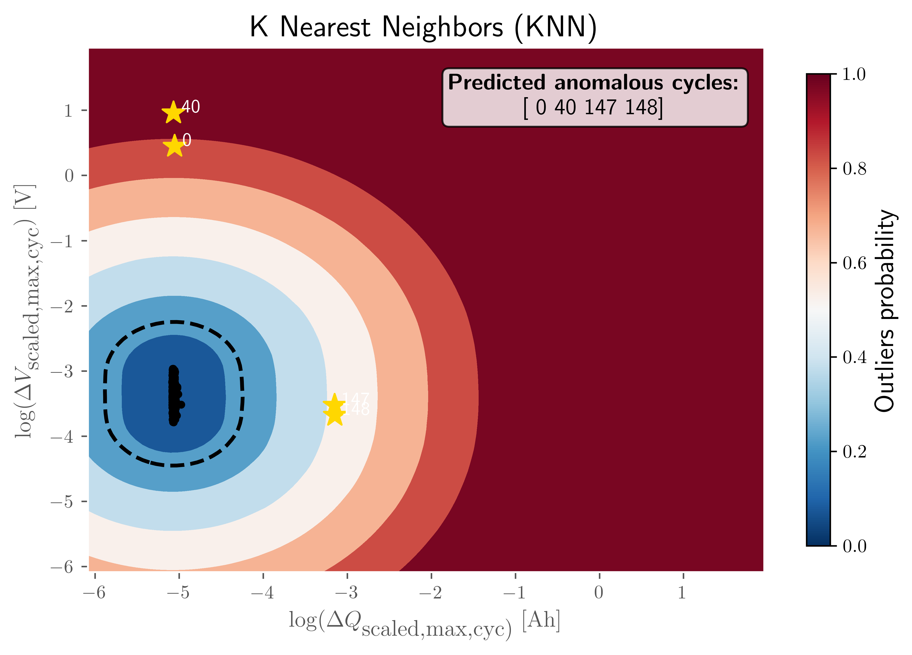
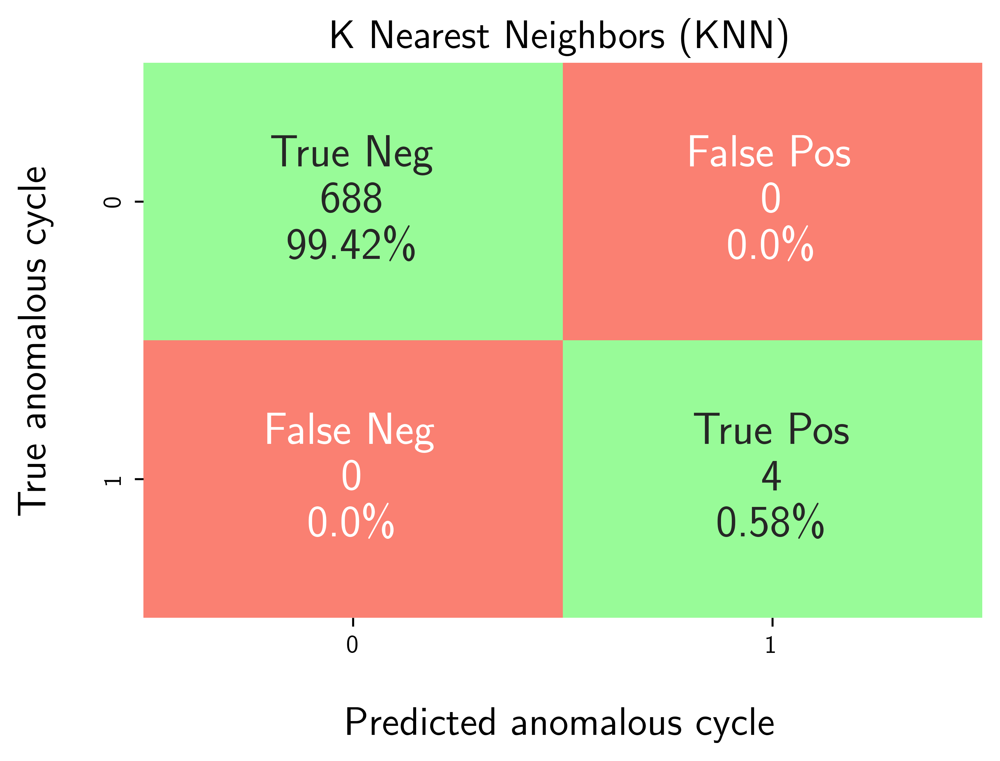

Example: Benchmarking K-Nearest Neighbors with Hyperparameter Tuning using Proxy Evaluation Metrics¶
This example illustrates how to leverage the capabilities of osbad for hyperparameter tuning in unsupervised anomaly detection models when no prior labeled training data is available. In such scenarios, traditional hyperparameter optimization methods based on transfer learning cannot be directly applied. Consequently, the objective function must be redefined because conventional outlier detection metrics, such as precision and recall, are not meaningful during the tuning process. To address this, a surrogate multivariate regression model is utilized to estimate model performance using alternative indicators like regression loss and inlier count score. These serve as practical substitutes in the absence of ground-truth labels. The underlying principle is that if the anomaly detection model effectively isolates outliers, the remaining inlier data should exhibit a more coherent structure, resulting in improved regression loss.
The following example of running a hyperparameter tuning and anomaly detection
pipeline is also provided as a notebook in
quick_start_tutorials/04_knn_hpt_proxy_regr.ipynb.
Step-1: Load libraries¶
Import the libraries into your local development environment, including the
osbad library for benchmarking anomaly detection.
Pathis used for robust, cross-platform file paths.duckdbis the embedded analytical database engine storing the dataset.fireducks.pandas as pdgives you a pandas-compatible API; you can usually treat it like import pandas as pd.optunafor automated hyperparameter optimization that uses efficient algorithms like Bayesian optimization to find the best parameter settings.rcParams["text.usetex"] = Truetells Matplotlib to render text via LaTeX. If you don’t have LaTeX installed, flip this to False.bconf: project config utilities (e.g., where to write artifacts).BenchDB: a thin layer around DuckDB that provides convenience loaders.ModelRunner,hp,modval: modeling, hyperparameters, and model validation helpers for benchmarking study in this project.
# Standard library
from pathlib import Path
import pprint
# Third-party libraries
import duckdb
import pandas as pd
import matplotlib.pyplot as plt
import numpy as np
import optuna
from matplotlib import rcParams
rcParams["text.usetex"] = True
# Custom osbad library for anomaly detection
import osbad.config as bconf
import osbad.hyperparam as hp
import osbad.modval as modval
import osbad.viz as bviz
from osbad.database import BenchDB
from osbad.model import ModelRunner
Step-2: Load Benchmarking Dataset¶
Pick a specific cell based on the
cell_index, which identifies the experimental data corresponding to one unique cell.Create an artifacts folder for that cell, where you can save figures, tables, or model outputs related to this cell.
Initialize
BenchDBfor the selected cell and path to the DuckDB file:train_dataset_severson.db.Loads all data related to
selected_cell_labelfrom the training partition.
# Get the cell-ID from cell_inventory
selected_cell_label = "2017-05-12_5_4C-70per_3C_CH17"
# Create a subfolder to store fig output
# corresponding to each cell-index
selected_cell_artifacts_dir = bconf.artifacts_output_dir(
selected_cell_label)
# Path to the DuckDB file:
# "train_dataset_severson.db"
db_filepath = (
Path.cwd()
.parent
.joinpath("database","train_dataset_severson.db"))
# Import the BenchDB class
# Load only the dataset based on the selected cell
benchdb = BenchDB(
db_filepath,
selected_cell_label)
# load the benchmarking dataset
df_selected_cell = benchdb.load_benchmark_dataset(
dataset_type="train")
Step-3: Load the Features DB¶
Load the features (e.g.,
log_max_diff_dQ,log_max_diff_dV) based onselected_cell_labelinBenchDB.
# Define the filepath to ``train_features_severson.db``
# DuckDB instance.
db_features_filepath = (
Path.cwd()
.parent
.joinpath("database","train_features_severson.db"))
# Load only the training features dataset
df_features_per_cell = benchdb.load_features_db(
db_features_filepath,
dataset_type="train")
Step-4: Hyperparameter Tuning with Optuna using Proxy Metrics¶
Define the search space for K-Nearest Neighbors hyperparameters:
contamination: Expected proportion of outliers (0.0 - 0.5)n_neighbors: Number of nearest neighbors to consider when computing the anomaly score (2 - 50)method: Specifies how the anomaly score is calculated. Common options include:largest: Distance to the farthest neighbor.mean: Average distance to all neighbors.median: Median distance to neighbors.
metric: The distance metric used to compute neighbor distances.threshold: Decision threshold for outlier probability (0.0 - 1.0)
Use Optuna’s TPE sampler to optimize for both proxy metrics (regression loss score and inlier count score)
Run 100 trials to find the best hyperparameter configuration.
# Update the HP config for max_samples depending on the cycle numbers
total_cycle_count = len(
df_selected_cell_without_labels["cycle_index"].unique())
hp_config_knn = {
"contamination": {"low": 0.0, "high": 0.5},
"n_neighbors": {"low": 2, "high": 50},
"method": ["largest","mean","median"],
"metric": ["minkowski","euclidean","manhattan"],
"threshold": {"low": 0.0, "high": 1.0}
}
knn_hp_config_filepath = (
Path.cwd()
.parents[3]
.joinpath(
"machine_learning",
"hp_config_schema",
"severson_hp_config",
"knn_hp_config.json"))
bconf.create_json_hp_config(
knn_hp_config_filepath,
hp_dict=hp_config_knn)
# Reload the hp module to refresh in-memory variables
from importlib import reload
reload(hp)
# Instantiate an optuna study for knn model
sampler = optuna.samplers.TPESampler(seed=42)
selected_feature_cols = (
"cycle_index",
"log_max_diff_dQ",
"log_max_diff_dV")
knn_study = optuna.create_study(
study_name="knn_hyperparam",
sampler=sampler,
directions=["minimize","maximize"])
knn_study.optimize(
lambda trial: hp.objective(
trial,
model_id="knn",
df_feature_dataset=df_features_per_cell,
selected_feature_cols=selected_feature_cols,
selected_cell_label=selected_cell_label),
n_trials=100)
Note
If you notice, there is no df_benchmark_dataset argument used in
objective function. The optimization trials do not depend on the recall and
precision, but instead on the proxy metrics which are designed to be
calculated independent of the true labels.
Step-5: Aggregate Best Hyperparameters¶
Extract the optimal trade-off trails or best compromise solutions from the pareto optimal trials.
trade_off_trials_detectionmethod from thehpmodule uses frequency based approach to detect the best compromise trails (marked by green).Hyperparameters from these trails are aggregated using median values.
Export the optimized hyperparameters to CSV for reproducibility.
schema_knn = {
"contamination": "median",
"n_neighbors": "median_int",
"method": "mode",
"metric": "mode",
"threshold": "median",
}
trade_off_trials_list = hp.trade_off_trials_detection(
study=knn_study)
df_knn_hyperparam = hp.aggregate_best_trials(
trade_off_trials_list,
cell_label=selected_cell_label,
model_id="knn",
schema=schema_knn)
hp.plot_proxy_pareto_front(
knn_study,
trade_off_trials_list,
selected_cell_label,
fig_title="K Nearest Neighbors (KNN) Pareto Front")
plt.show()
# Export current hyperparameters to CSV
hyperparam_filepath = Path.cwd().joinpath(
"ml_02_knn_hyperparam_proxy_severson.csv")
hp.export_current_hyperparam(
df_knn_hyperparam,
selected_cell_label,
export_csv_filepath=hyperparam_filepath,
if_exists="replace")
_pareto_front_2017-05-12_5_4C-70per_3C_CH17.png)
This figure illustrates the Pareto fronts obtained from Bayesian optimization performed to minimize the normalized regression loss score and maximize the normalized inlier count score for K-Nearest Neighbors using the severson dataset.
The X-axis is the normalized regression loss score (regression loss between actual features and predicted features by a multivariate linear regression model for predicted inlier cycles/features by the unsupervised anomaly detection model for selected configuration).
The Y-axis is the normalized inlier count score (ratio of predicted inlier cycle and total number of cycles).
While the blue scattered points represent all the trials evaluated during the optimization process, the red dots denote the pareto optimal trials and green dot denotes the best compromise solution.
Step-6: Train Model with Best Hyperparameters¶
Load the optimized hyperparameters from the CSV file.
Create a
ModelRunnerinstance with the selected features.Train the KNN model using the best hyperparameters.
Predict outlier probabilities and identify anomalous cycles.
# Load best trial parameters from CSV output
df_hyperparam_from_csv = pd.read_csv(hyperparam_filepath)
df_param_per_cell = df_hyperparam_from_csv[
df_hyperparam_from_csv["cell_index"] == selected_cell_label]
param_dict = df_param_per_cell.iloc[0].to_dict()
pprint.pp(param_dict)
# Run the model with best trial parameters
cfg = hp.MODEL_CONFIG["knn"]
runner = ModelRunner(
cell_label=selected_cell_label,
df_input_features=df_merge_features,
selected_feature_cols=selected_feature_cols
)
Xdata = runner.create_model_x_input()
model = cfg.model_param(param_dict)
print(model)
model.fit(Xdata)
proba = model.predict_proba(Xdata)
(pred_outlier_indices,
pred_outlier_score) = runner.pred_outlier_indices_from_proba(
proba=proba,
threshold=param_dict["threshold"],
outlier_col=cfg.proba_col
)
# Get df_outliers_pred
df_outliers_pred = (df_merge_features[
df_merge_features["cycle_index"]
.isin(pred_outlier_indices)].copy())
df_outliers_pred["outlier_prob"] = pred_outlier_score
df_outliers_pred = (df_features_per_cell[
df_features_per_cell["cycle_index"]
.isin(pred_outlier_indices)].copy())
df_outliers_pred["outlier_prob"] = pred_outlier_score
Step-8: Predict Anomaly Score Map¶
Generate a 2D contour map showing the anomaly probability across the feature space.
Highlight the predicted anomalous cycles.
The map helps visualize which regions of the feature space are considered anomalous by the model.
axplot = runner.predict_anomaly_score_map(
selected_model=model,
model_name="K Nearest Neighbors (KNN)",
xoutliers=df_outliers_pred["log_max_diff_dQ"],
youtliers=df_outliers_pred["log_max_diff_dV"],
pred_outliers_index=pred_outlier_indices,
threshold=param_dict["threshold"]
)
axplot.set_xlabel(
r"$\log(\Delta Q_\textrm{scaled,max,cyc)}\;\textrm{[Ah]}$",
fontsize=12)
axplot.set_ylabel(
r"$\log(\Delta V_\textrm{scaled,max,cyc})\;\textrm{[V]}$",
fontsize=12)
output_fig_filename = (
"knn_"
+ selected_cell_label
+ ".png")
fig_output_path = (
selected_cell_artifacts_dir
.joinpath(output_fig_filename))
plt.savefig(
fig_output_path,
dpi=600,
bbox_inches="tight")
plt.show()
{kind=link}

The visualization illustrates the decision boundary and anomaly probability distribution in the two-dimensional feature space defined by:
log(ΔQ_scaled,max,cyc): Represents the scaled change in maximum discharge capacity across cycles.
log(ΔV_scaled,max,cyc): Represents the scaled change in maximum voltage across cycles.
Color Gradient Interpretation
Dark Blue Regions (outlier probability ≈ 0.0): Indicate normal operating conditions where cycles exhibit typical capacity and voltage change patterns.
Light Blue to White Regions (outlier probability ≈ 0.2–0.5): Transition zones where the KNN model begins to detect deviations from expected behavior.
Orange to Red Regions (outlier probability ≈ 0.6–0.8): Areas with moderate anomaly likelihood, suggesting unusual combinations of capacity and voltage changes.
Dark Red Regions (outlier probability ≈ 1.0): High-confidence anomaly zones where cycles are strongly classified as outliers.
Decision Boundary
The dashed black contour represents the decision threshold separating normal cycles from anomalous ones based on the KNN distance metric.
Predicted Normal vs Anomalous Cycles
Yellow stars mark the detected anomalous cycles at indices 0, 40, 147, and 148, as annotated in the legend box. The majority of normal cycles cluster in the central dark-blue region, indicating stable degradation behavior.
Key Insight
This visualization demonstrates how the KNN model leverages local density and distance-based metrics to distinguish anomalous capacity-voltage change patterns from normal distribution. The anomalies detected are positioned far from the dense cluster of normal cycles, highlighting their deviation in both engineered features.
Step-9: Model Performance Evaluation¶
The optimal hyperparameters are evaluated against the true labels using standard anomaly detection metrics for a post hoc evaluation and comparison.
Generate a confusion matrix to visualize True Positives, False Positives, True Negatives, and False Negatives.
Calculate performance metrics: precision, recall, F1-score, and accuracy.
df_eval_outlier = modval.evaluate_pred_outliers(
df_benchmark=df_selected_cell,
outlier_cycle_index=pred_outlier_indices)
# confusion matrix
axplot = modval.generate_confusion_matrix(
y_true=df_eval_outlier["true_outlier"],
y_pred=df_eval_outlier["pred_outlier"])
axplot.set_title(
"K Nearest Neighbors (KNN)",
fontsize=16)
output_fig_filename = (
"conf_matrix_knn_"
+ selected_cell_label
+ ".png")
fig_output_path = (
selected_cell_artifacts_dir
.joinpath(output_fig_filename))
plt.savefig(
fig_output_path,
dpi=600,
bbox_inches="tight")
plt.show()
# evaluate model performance
df_current_eval_metrics = modval.eval_model_performance(
model_name="knn",
selected_cell_label=selected_cell_label,
df_eval_outliers=df_eval_outlier)
# Export model performance metrics to CSV output
hyperparam_eval_filepath = Path.cwd().joinpath(
"eval_metrics_hp_single_cell_severson.csv")
hp.export_current_model_metrics(
model_name="knn",
selected_cell_label=selected_cell_label,
df_current_eval_metrics=df_current_eval_metrics,
export_csv_filepath=hyperparam_eval_filepath,
if_exists="replace")
{kind=link}
